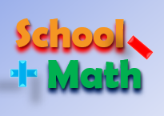
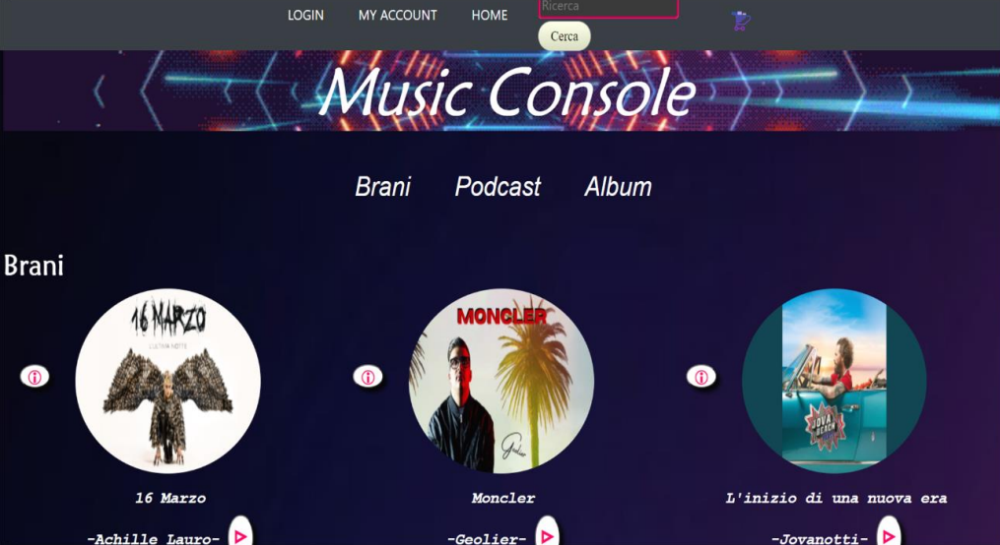
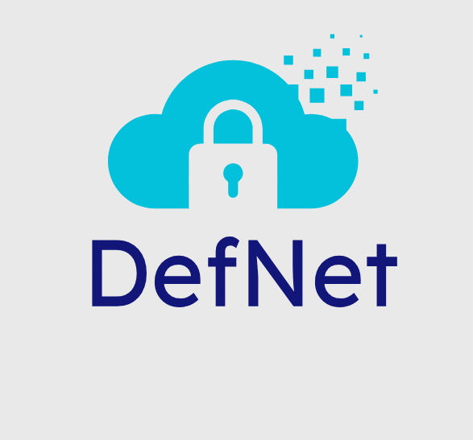
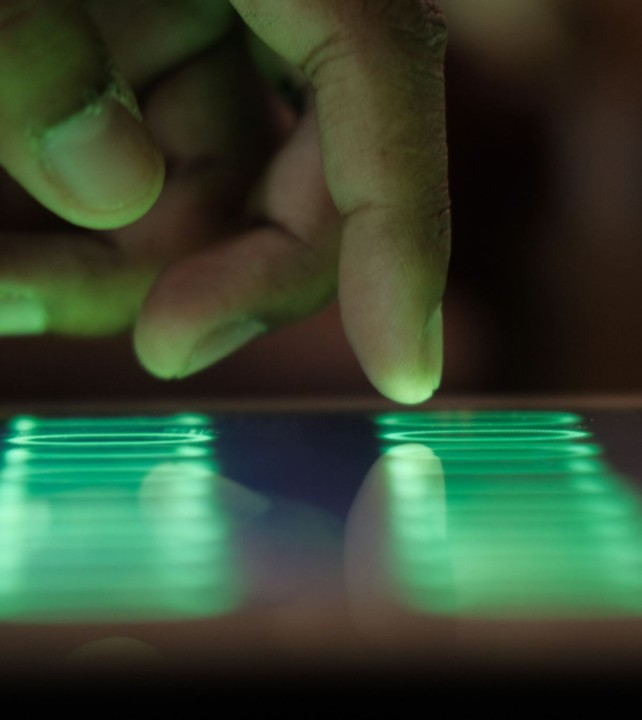
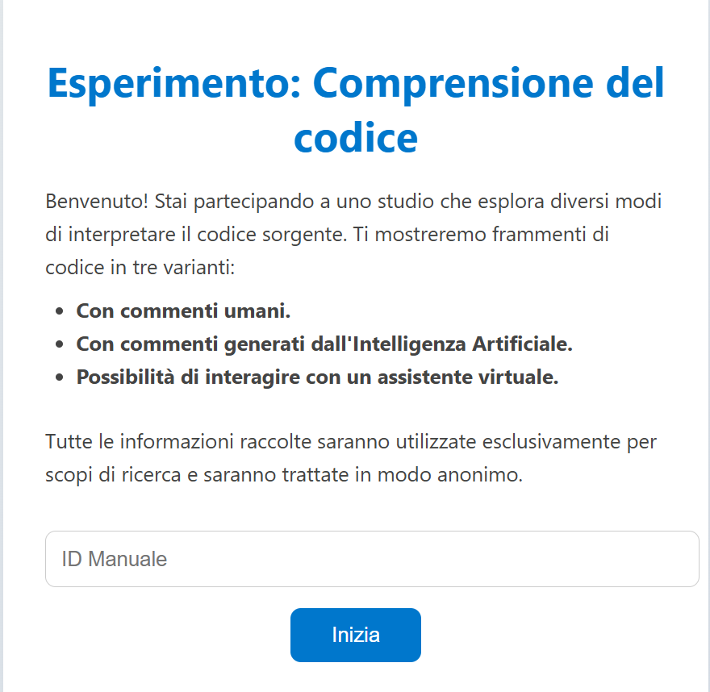
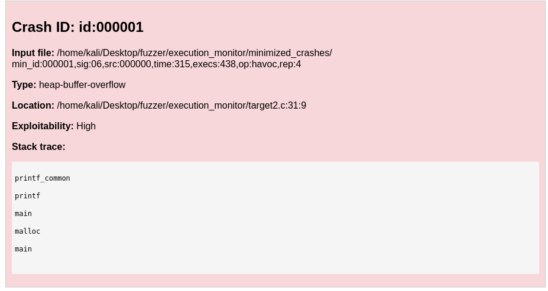

Sviluppatrice Web & Cybersecurity
Trasformo idee in applicazioni sicure e intuitive.
Sono Katia Buonocore, laureata magistrale in Informatica con specializzazione in Sicurezza Informatica presso l'Università degli Studi di Salerno.
Il mio percorso unisce sviluppo software e cybersecurity: ho esperienza nello sviluppo di applicazioni web e nello studio di tematiche come ethical hacking, penetration testing e analisi delle vulnerabilità.
Ho partecipato all’App Challenge 2024, conquistando il podio con un’app sviluppata in collaborazione con LinearIT, un’esperienza che mi ha permesso di mettere alla prova le mie competenze tecniche in un contesto reale e collaborativo.
Oltre alle competenze tecniche, possiedo buone capacità organizzative e comunicative sviluppate attraverso progetti universitari, collaborando alla gestione e al coordinamento delle attività.
Le mie passioni spaziano tra disegno, pittura, musica e cucito, attività che stimolano la creatività e la precisione. Lo sport e le esperienze di viaggio hanno invece contribuito a rafforzare la mia capacità di adattamento e il lavoro di squadra, abituandomi a contesti diversi e dinamici.
Mi interessa lavorare nello sviluppo di applicazioni sicure, con particolare attenzione alla protezione dei dati e alla sicurezza delle applicazioni.

Applicazione in realtà aumentata per la comprensione di addizione e sottrazione. Inquadrando tessere numeriche tramite fotocamera, vengono visualizzati numeri e regoli in 3D; l’utente può selezionare l’operazione e visualizzarne il risultato in modo interattivo.

Sviluppo di una piattaforma e-commerce musicale che consente l’acquisto di brani. Il progetto include sia l’area utente sia quella amministratore, con funzionalità di gestione prodotti e ordini. Sono state inoltre svolte attività di testing per garantire il corretto funzionamento del sistema.

Dispositivo hardware basato su Raspberry Pi 4 B progettato come sistema di intrusion detection e prevention, portatile e pensato per garantire una connessione sicura. Include un’app mobile per il controllo della rete, blocco pubblicità, parental control e notifiche in caso di attacchi.

Analisi di un dataset sul comportamento degli utenti su desktop, tablet e smartphone durante diverse attività. Sono state estratte feature significative e addestrati vari modelli di machine learning, valutandone le prestazioni per individuare il più efficace.
Sviluppo di un sito vetrina per film e serie TV con sistema di autenticazione utenti. Include funzionalità di ricerca avanzata, gestione preferiti e un’area amministratore per l’aggiunta, modifica e rimozione dei contenuti.

Simulazione di un esperimento per valutare l’efficacia di diverse tecniche di comprensione del codice: commenti umani, commenti generati da AI e assistente virtuale. È stata sviluppata una piattaforma che mostrava codice (Java e Rust) con tempo limitato, seguita da domande di verifica e questionari finali per confrontare i risultati.

Sviluppo di un sistema di fuzzing per generare input casuali e individuare crash in programmi C. Utilizzate diverse tecniche di generazione e mutazione degli input: una basata sulla creazione da zero, una sulla modifica dei byte esistenti e una specifica per input XML e Json. Analisi effettuata tramite Address Sanitizer per identificare e classificare le vulnerabilità. Il sistema minimizza gli input responsabili dei crash e produce un report HTML dettagliato.
Sei interessato al mio profilo o vuoi conoscermi meglio? Contattami 👇